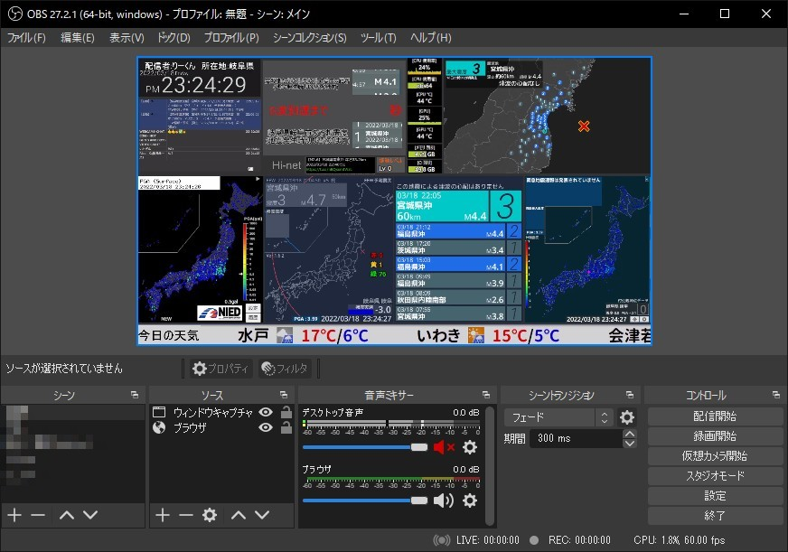

使用ソフト一覧【2022年版】
配信画面キャプチャ
1.専用時計
現在時刻を表示するソフト

2.MultiCommentViewer
配信に投稿されたコメントを配信内に表示するソフト
Download Link
3.EqMini (一時的に休止)
Download Link4.Mooシステムモニター
Systemの使用状況をリアルタイムで表示するソフト
Download Link
5.EarthquakeMap
地震マップ、EEW予想震度を表示するソフト
Download Link6.強震モニタ Extension
表示画像：地表加速度
Download Link
7.kiwi monitor
表示画像：EEW予想震度+地震情報
Download Link
8.JQuake
表示画像：地表リアルタイム震度・震度0.5以上震度アイコン
津波情報発表時：津波情報線
Download Link9.ティッカーくん
天気などを表示するソフト
Download Link10.Tsunami List Viewer
津波予報などを表示するソフト
津波情報などが発表された際の画面(2022年01月時点)
11.Live EEW Cancel
緊急地震速報のキャンセル報が発表された際に、画面の下側に「キャンセル」を表示するソフト
12.Open Broadcaster Software（OBS）
配信ソフト
Download Link 13.Reduce Memory
メモリー開放ツール
Download Link
14.P2P地震情報
Download Link